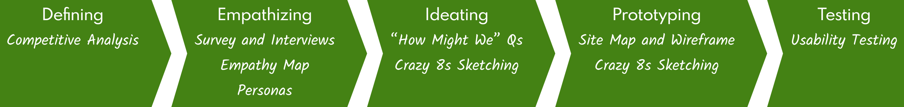
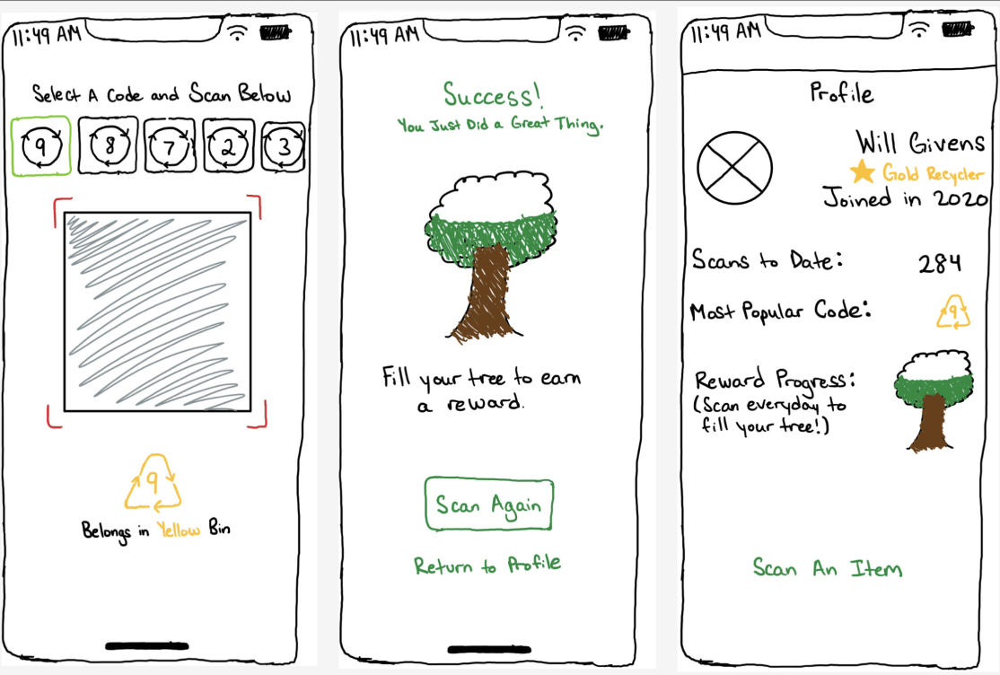
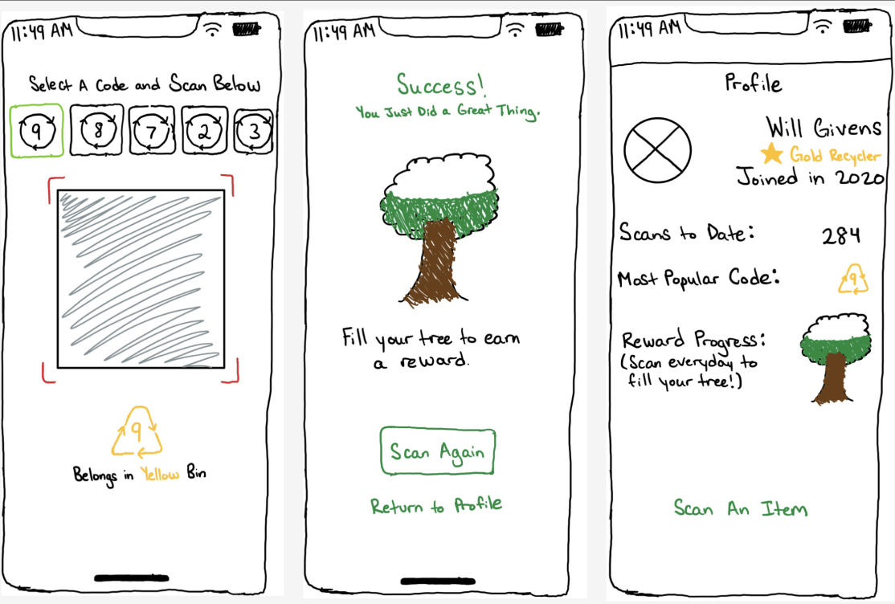

Problem: Young adults are often confused about which products to recycle and how to recycle them due to the wide range of recyclable materials and recycling parameters. As such, recyclable waste ends up in landfills instead of recycling centers.
Econia
[Short introduction].
The Rundown
Summary
[A team comprised of myself and 4 others utilized the Design Thinking Framework to design a new product aimed at young adults who recycle.] 1. completing a UX audit of the Messages application, 2. sketching my solution and later prototyping it, and 3. receiving feedback from users on the final implementation.
Timeline and Disciplines
August 2020 - November 2020
Design Thinking Framework, User Research, Wireframing, Design System, Prototyping, Usability Testing
The Solution
[Talk a bit about the overall process].
- Defined the Product
- Empathized With Target Users
- Ideated Potential Solutions
- Prototyped Solutions
- Tested Final Designs for Usability
Defining the Product
I began by referencing the Messages interface and how users are already able to interact with texts. I wanted to see how Apple could theoretically add this feature without their developers having to create new codebases; as you will see, my solution is similar procedurally to other message interactions, meaning Apple’s engineers would not need to change much of their code to implement this.

Empathizing With Target Users
I then moved on to creating low-fidelity solution sketches. It was helpful that my ideas were similar to Apple’s existing user interface, so I only had to focus on drawing a few new features/components.


Ideating Potential Solutions
Prior to prototyping, I thought about how I could best represent the concept of “editing” without words. I believed a pencil icon would work perfectly.

Prior to prototyping, I thought about how I could best represent the concept of “editing” without words. I believed a pencil icon would work perfectly.
 

Prototyping Final Solutions
Color was important as well. I tried to figure out which color(s) would best signify that a component had been changed or was being worked on. Ultimately, I decided on Apple’s “System Yellow.”
System Yellow
Apple uses System Yellow when something is being altered or created (ex: in the Photos app while editing pictures, inside of the Notes application, and in the Camera app). In the real world, yellow is often used to denote caution or "work in progress."

I then put everything together. As aforementioned, the two main actions I focused on were editing a message and viewing message edits. I made sure both processes involved similar steps to other message interactions to prevent unnecessarily increasing cognitive load.
Editing A Message
To edit a message, users would select the edit feature from the long-press dropdown and send their edits as they would a reply.
Showing the original message while preparing edits prevents users from making any additional errors (by being able to see what was written the first time).
Making the "Send" button yellow tells users that they are about to edit a message, not reply to it.


Viewing Message Edits
To view edits made to a message, users would click on the yellow “edited” icon in the bottom left corner of the message (like clicking on a tapback response). They would then see the original message as well as the edits made to it.
Putting the "edited" indicator in the bottom corner lets users know it is something different than the Tapback reactions.


Viewing Message Edits
To view edits made to a message, users would click on the yellow “edited” icon in the bottom left corner of the message (like clicking on a tapback response). They would then see the original message as well as the edits made to it.
Putting the "edited" indicator in the bottom corner lets users know it is something different than the Tapback reactions.


Feedback
I tested my solution with a few other Messages users and asked for their feedback. Generally, the response was positive, but they specifically liked: 1. using a different color to delineate message types, and 2. preserving the original message to help compare with the edited; keeping the original message would prevent users from concealing/erasing negative evidence (trash talking, explicit photos, etc).
Reflecting
One of my next steps for this would be to optimize for accessibility. Some of my design decisions were rooted in the color of components, but many users may not be able to interpret them. As such, it would be beneficial to figure out how to convey the same ideas without relying on color.
Overall, this was a great mini project to exercise my user interface design skills, as well as some fundamental user experience design concepts.